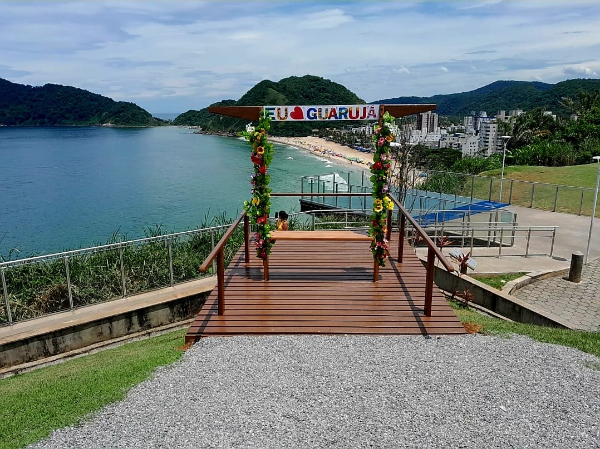

Mirante das Galhetas
Localizado no Morro da Caixa D’Água, o Mirante das Galhetas proporciona aos visitantes uma experiência incrível com a primeira estrutura de piso de vidro da Baixada Santista. Trata-se do piso skywalker, suspenso a 45 metros do nível do mar. Além de proporcionar uma paisagem espetacular da Praia do Tombo, o local também é adequado para prática de voo livre.
Acqua Mundo
O Acqua Mundo, é um empreendimento privado, que privilegia desde sua inauguração, a educação ambiental e a pesquisa ecológica. Com isto oferece aos visitantes 49 recintos (água doce, salgada, aquaterrários e terrários) com representações de vários habitats marinhos e terrestres. Com 1.446.560 litros de água e totalizando uma área de 5.775 m², o Acqua Mundo é um verdadeiro complexo de entretenimento com lanchonete, sorveteria MC Donald’s, espaço kids, loja temática, e uma das maiores exposição de organismos aquáticos da América do Sul.
Fortaleza Santo Amaro da Barra Grande

Conhecida como Fortaleza da Barra Grande, a fortificação localiza-se entre a Praia do Góes e Praia de Santa Cruz dos Navegantes, na cidade de Guarujá. A Fortaleza está projetada sobre o canal de acesso ao estuário do maior porto da América Latina e foi construída em 1584 para proteger a Vila de Santos contra das invasões piratas. De lá, soldados tinham uma visão estratégica e privilegiada de todas as entradas do porto e, assim, conseguiam intimidar os invasores com seus canhões. Em 1964, a Fortaleza da Barra foi reconhecida como Patrimônio Histórico Nacional pelo IPHAN.